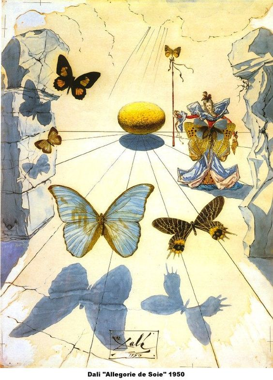
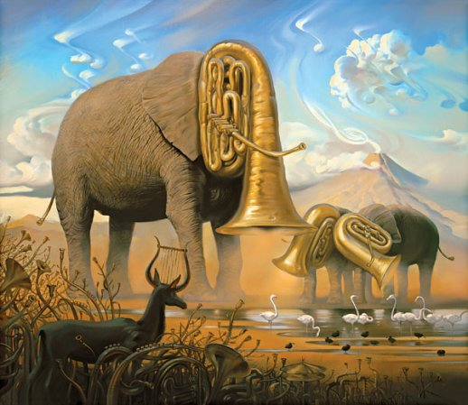
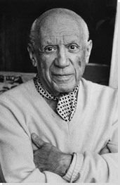

Salvador Dali

Nadrealizam je umjetnički pokret nastao u Parizu. Nastao je i razvijao se neposredno iz talijanskog metafizičkog slikarstva i dadaizma. André Breton, francuski pjesnik, prvi je okupio umjetnike novog smjera svojim "Manifestom nadrealizma" 1924. g. Kao i futuristi, prezirali su sve zakone i ustaljene običaje, ali umjesto borbi s društvom, okrenuli su se od stvarnosti i usmjerili svoje napore istraživanju ljudskog duha za koji su smatrali da je potisnut i ugušen društvenim pritiscima. Breton je definirao nadrealizam kao "diktat misli, bez kontrole razuma, izvan svake estetske ili moralne preokupacije".
Fantazijska, iracionalna, imaginacijska komponenta umjetnosti oduvijek je izražavala tajnovite predjele ljudske duše. Europska likovna umjetnost od srednjeg vijeka do danas otvara izvore imaginacijskog na razne načine. Tek u nadrealizmu su ove strukture ljudskog bića izašle u prvi plan i umjetnici su se skupili u jedinstven pokret.
Metafizičko slikarstvo nastalo je u talijanskom gradu Ferrara 1917. godine. Nastao je iz susreta četvorice umjetnika: Giorgia de Chirica, Carla Carráa, Alberta Savinija i Filippa de Pisisa. Naredne godine pridružuje joj se i Giorgio Morandi. Grupa se 1920. raspada. Ti umjetnici sami sebe određuju kao metafizičare, to jest smatraju da vide onkraj stvarnosti. Njihova djela, čije značenje često ostaje tajanstveno, priopćavaju osjet nestvarnosti, iščekivanja neobičnog događaja, prizivaju tišinu i san. Što metafizičke slike čini tako "uznemirujućima"? Raspoloženje koje ih prožima - očaravajuće, a istodobno odbojno. Ništa od onoga što je naslikano nije onako kakvim se čini: predmeti se postavljaju jedan uz drugi bez logičkog smisla, a odnosi koji ih povezuju ostaju nepoznati. U tehničkom pogledu savršeno kao antičko slikarstvo, metafizičke slike ne teže tome da budu provokativno neugodne kao i dadaističke, već nas upozoravaju da nas i neživi predmeti mogu uvući u čarobni krug, u začaranu dimenziju.
Ruski židov Marc Chagall (1887.-1985.) druga je preteča nadrealizma. Došavši u Pariz slika jednu drugu fantastičnu lirsku poetiku s elementima dječje naivnosti. Na njegovim slikama sve je moguće, nema zakona teže i ne vrijede zakoni fizike, pa likovi lebde i plove prostorom, a duh slobodno luta vremenom, boja ima slikarsku i simboličnu funkciju, a motivi su mu vezani za selo, brak, životinje, biblijske motive, itd. Sve u svemu, jedno antilogično figurativno lirsko slikarstvo snovitih vizija.

Kao što je već navedeno, pokret je nastao 1924. godine u Parizu. Nadrealizam se oslanja na iskustvima drugih pokreta, u prvom redu ekspresionizma i dade. Nadrealisti na svojim slikama do krajnjih granica dovode vizualno izmještanje i osjećaj nestvarnosti. Nadahnuće traže u podsvjesnome te jedan kraj drugog stavljaju likove koji su jedan drugom strani, kao što su to nekoliko godina ranije radili metafizičari i dadaisti. Bizarno, neobično, uznemirujuće - sve to karakterizira djela nadrealista koji otvoreno izjavljuju da žive zajedno s čudovištima ljudskog uma.
U slikarstvu se nadrealisti služe veoma preciznom tehnikom, čineći gotovo opipljivima vizije koje pripadaju dimenziji uma, a ne dimenziji stvarnosti. Na platnu predmeti trpe izobličenja ili se smještaju u kontekst koji je potpuno stran njihovoj uobičajenoj okolini.
Nadrealisti se oslanjaju na teoriju austrijskog psihijatra Sigmunda Freuda (osnivača psihoanalize), prema kojoj čovjek ima dvije naravi, jednu svjesnu i budnu, a drugu podsvjesnu i potisnutu odgojem i zakonima zajednice. Ta ljudska podsvijest se oslobađala u snovima i halucinacijama, te su zato nadrealisti osobitu pozornost usmjerili snovima i slobodnu lutanju prostorima mašte.

Albert Skira, mlad i poduzetan bibliofil, koji je u Lausannei 1928. godine osnovao izdavačku kuću istog imena, započinje karijeru 25. listopada 1931. godine objavljivanjem Ovidijevih Metarmofoza koje je, na poziv Pierra Matissea, ilustrirao Pablo Picasso s 30 bakroreza. Uz pomoć Efstratiosa Tériadea, Skira povjerava André Bretonu uređivanje novog umjetničkog časopisa Minotaure. Naslovnicu za prvi broj Minotaurea dizajnirao je Pablo Picasso. Ostale su izradili Marcel Duchamp, Juan Miró, Salvador Dalí, Henri Matisse, René Magritte te Max Ernst. Iako je časopis prije svega glas nadrealista, oštroumno i nepristrano daje prostor raspravama među umjetnicima različitih mišljenja i stremljenja, od Georges Braquea do André Deraina, te od Henri Laurensa do Constantin Brancusija. Posljednji broj Minotaurea izlazi u svibnju 1939. godine, a zatim političke okolnosti sprječavaju daljnje izlaženje. Unatoč kratkom vijeku, časopis ima veliki značaj za razvoj i širenje slikarske avangarde i temeljno je svjedočanstvo o umjetnosti između dva rata.
Razdoblje između dvaju svjetskih ratova obilježeno je sveopćim širenjem i prihvaćanjem pobuda što ih je dalo eksperimentalno i revolucionarno desetljeće likovnih umjetnosti na početku stoljeća. Gotovo svi novi stilovi traju, ali će se većina umjetnika, zamoreni od istraživanja i neizvjesnosti, vratiti u sigurno okrilje realizma. Taj novi realizam nije više objektivan i "neutralan" kao u 19. st.; ponekad je impresionistički lagan, ili podcrtan ekspresionističkom izražajnošću, ili ima zbijene volumene u duhu kubizma, ili je pojednostavljen i pročišćen u tragu metafizičkog slikarstva.
Tipični motivi nadrealističkih slika povezuju nespojive oblike u biološkom svijetu ili zrcale neodržive ravnoteže u fizičkom. Tako neki stvaraju biološki "moguće", ali neviđene i nepostojeće oblike organičkog svijeta, kao na slikama Ivesa Tanguyja (1900.-1955.) koji slika duboka beskrajna prostranstva u kojima se nalaze fantastični oblici - svijet apsurda i deformacija s izvorištem u podsvijesti.
Paul Klee (1879.-1940.) stvara isto jedan nepostojeći prostor koji je neizmjeran, sastavljen od pomno slaganih ploha nježnih boja, najsuptilnijih prijelaza koji zahtijevaju pomno promišljanje i prepuštanje mašti – spoj dječje naivnosti i jednostavnosti s vrhunskim znanjem i majstorstvom umjetnika. Dakle, jedno poetično i apstraktno slikarstvo u kojem boja ima potpunu autonomiju. Klee bi rekao: "Umjetnost je izrazito subjektivna", i … "Umjetnost ne predstavlja ono što je vidljivo, nego stvara vidljivo."
Drugi slikari, poput najpoznatijeg nadrealista – Salvadora Dalija (1904.-1989.), nastoje što dublje prodrijeti u ponore ljudske podsvijesti (osobito strahova, bjesova, nemoći i mržnje). Dalí nastoji što točnije prikazati, u zbilji nemoguće, kombinacije iz snova, i to tako uvjerljivo da se doimaju posve istinitima. Te "fotografije sna" su tako pomno realistički naslikane da podsjećaju na naturalističke prikaze prirode iako im sadržaj nije životna svakodnevica nego vizije što ih duh i mašta stvaraju u snovima.
Sablasne prizore koji kao da izviru iz nekog sna prikazivao je i Max Ernst (1881.-1976.). On je bio Duchampov suradnik još u doba dadaizma, a jedan od prvih i najistaknutijih nadrealista. U svojim slikama kombinirao je kolaž i frotaž (franc. frottage = trljanje) iz kojeg je dobivao posebne efekte (dekalkomanija).
Blaži tip nadrealizma samo zbunjuje, ne izaziva tjeskobu ili nelagodu tipičnu za nadrealistička djela, već se doima više kao zagonetka i duhovna zabava. Takvo slikarstvo zastupa belgijanski nadrealistički slikar René Magritte koji se najdoslovnije poigrao s pojmom "slike" stvarnosti i umjetničke "slike". Na njegovim se slikama nespojive "bezezlene" stvari i pojave stapaju krajnjom jasnoćom i oštrinom.
Sličan pristup imao je i nizozemski grafičar M.C. Escher koji istražuje paradoksalne, prividno istinite, a zapravo nemoguće prostorne odnose.
Posve optimističan i blago ironičan pristup ima i Joan Miró čije su slike obijesne igre veselih boja, rasutih apstraktnih oblika u plohama mekih obrisa, ili pak oštrih linija u kojima prepoznajemo figure pretvorene u znakove u neobičnoj igri.
Za razliku od ovakvih kombinacija talijanski likovni umjetnik Alberto Giacometti (1901.-1966.), zaokupljen je prikazivanjem samospoznaje, egzistencijalizma kroz svoje istanjene krhke figure koje su uvijek neko mišljenje u prostornom odnosu. Dok je Marino Marini (1901.-1980.) zaokupljen problemom ravnoteže i gubitka ravnoteže prikazujući uznemirenje ljudskog bića. Njegove brojne varijacije konja i konjanika se sve više sjedinjuju u tragičnom posrtanju i padu.
Salvador Dali

Frida Kahlo

Rene Magritte

Max Ernst

Joan Miro

Pablo Picasso

Leonora Carrington